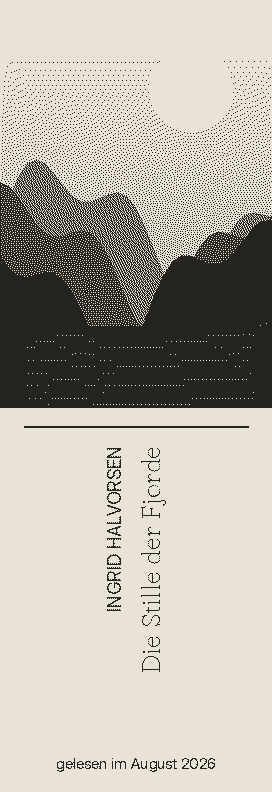
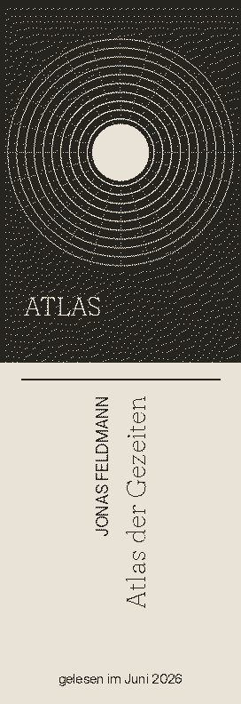
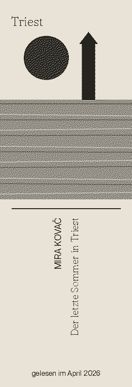
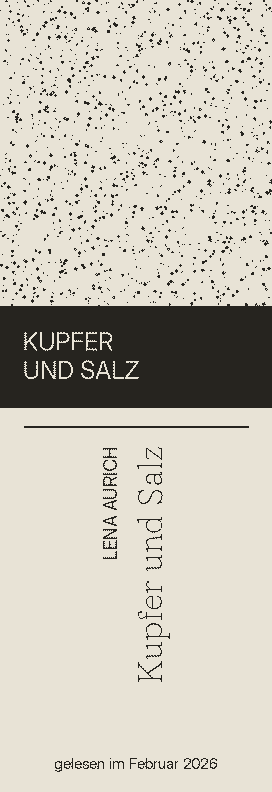
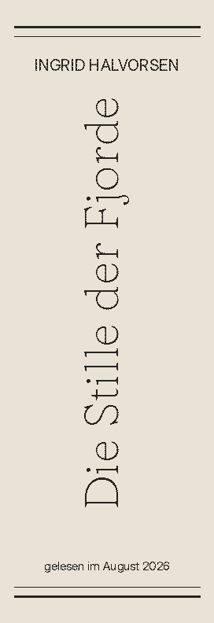
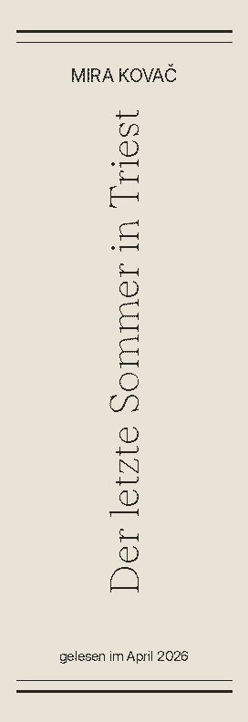
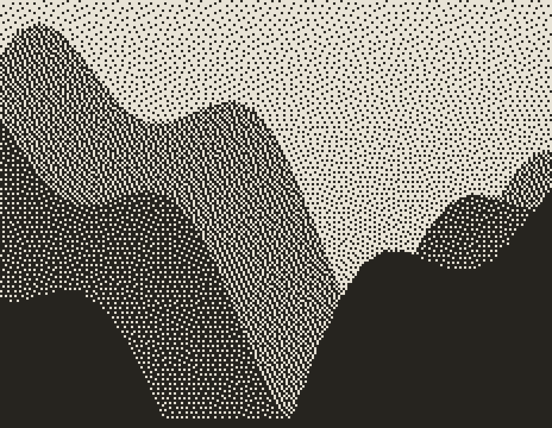

Kolophon sieht aus wie ein Hardcover im Regal. Sein Rücken ist ein E-Ink-Display, das nacheinander die Cover der Bücher zeigt, die du gelesen hast – auch die vom Kindle. Ohne Licht, ohne Kabel, monatelang.
Geplanter Preis: 149 € · Early Bird 129 € · Konzeptphase, noch nicht bestellbar




„Ein Regal erzählt, wer man ist. Ein Kindle erzählt gar nichts.“
Wer digital liest, liest oft mehr – aber nichts davon steht im Raum. Keine Rücken, an denen der Blick hängen bleibt, kein Gesprächsanfang, keine Erinnerung im Vorbeigehen.
Kolophon bringt deine gelesenen Bücher zurück ins Regal: als ein einziges, echtes Hardcover zwischen deinen Papierbüchern. Sein Rücken blättert langsam durch deine Lesegeschichte – Cover, Titel und wann du es gelesen hast. E-Ink braucht nur beim Umblättern Strom und sieht aus wie bedrucktes Papier, nicht wie ein Bildschirm.
In der Kolophon-App verknüpfst du die Quelle, in der deine gelesenen Bücher stehen. Kindle-Leser verbinden ihr Goodreads-Konto mit Amazon – oder laden einmalig ihren Amazon-Datenexport hoch.
Für jedes Buch holen wir das Cover, schneiden es auf das schmale Format zu, rastern es für E-Ink und setzen Titel, Autor und Lesedatum – wie ein Buchbinder.
Kolophon lädt die Rücken einmal täglich per WLAN und blättert stündlich weiter. Ein Druck aufs Kapital zeigt das nächste Buch. Nachts schläft es – das letzte Cover bleibt stehen.
Gebaut wie ein echter Einband – Leinen, Graukarton, Goldprägung. Drinnen: ein stromsparender ESP32, ein Akku und ein 5,79-Zoll-E-Ink-Streifen.
Stündlich, täglich oder nach deinem Rhythmus. Zufällig, chronologisch oder „Lieblinge zuerst“.
Rückentitel in DIN-Laufrichtung (aufsteigend) oder englisch, dazu „gelesen im August 2026“.
Cover-Modus mit Bild – oder klassischer Typo-Rücken wie bei einer Gesamtausgabe. Wechsel per Taster.
Zwischen den Wechseln schläft das Gerät mit wenigen Mikroampere. Das Bild bleibt ohne Strom stehen.
Ein versteckter Taster oben im Buch: drücken wie beim Herausziehen – und das nächste Buch erscheint.
2000-mAh-Akku, USB-C im Fuß. Bei stündlichem Wechsel rechnerisch über ein Jahr; wir versprechen konservativ 6+ Monate.
Echte Renderings des Kolophon-Renderers in 272 × 792 Pixeln, 1 Bit, gerastert. Die Bücher sind erfunden – deine werden es nicht sein.



E-Ink kann hier nur Schwarz und Weiß. Mit Floyd-Steinberg-Dithering wird aus jedem Cover ein feines Punktraster – bei 145 ppi aus Regalentfernung ein ruhiges, graustufiges Bild mit der Anmutung eines alten Drucks. Das Rendering passiert in der Cloud, das Buch lädt nur fertige 27-kB-Bilder.
Prototyp-Spezifikation (Rev A). Änderungen bis zur Serie vorbehalten.
| Format | Hardcover-Replik, 240 × 165 × 68 mm, ca. 450 g |
|---|---|
| Display | 5,79″ E-Ink-Streifen, 792 × 272 px, 145 ppi, Schwarz/Weiß Good Display GDEY0579T93 · Teil-Refresh 0,3 s, voll 3 s |
| Sichtfenster | 49,7 × 141 mm im Buchrücken, entspiegelt |
| Prozessor | ESP32-S3, 16 MB Flash, 8 MB PSRAM, WLAN 2,4 GHz |
| Speicher | ca. 500 Rücken offline (27 kB pro Bild) |
| Akku | LiPo 2000 mAh, USB-C-Laden (ca. 4 h) Laufzeit rechnerisch > 1 Jahr bei 16 Wechseln/Tag; Selbstentladung begrenzt real auf ca. 6–12 Monate |
| Bedienung | Taster im Kapital (weiter) · Taster im Fuß (Modus / Setup) |
| Materialien | Buckram-Leinen, Graukarton, Goldprägung, Innenträger aus PETG |
| Datenquellen | Goodreads, Hardcover, Amazon-Datenexport, CSV, ISBN |
Für das, was du auf dem Kindle gelesen hast, gibt es keine offene Schnittstelle. Wir bauen deshalb auf Wege, die legal und stabil sind – statt auf Tricks, die nächste Woche brechen.
Wir fragen nie nach deinem Amazon-Passwort, lesen keine Amazon-Seiten automatisiert aus und setzen keinen Jailbreak voraus. Das verstößt gegen Nutzungsbedingungen, ist unsicher und bricht bei jedem Update.
Amazon und Goodreads lassen sich verknüpfen; in der Kindle-App (iOS/Android) landen fertige Bücher automatisch auf „Gelesen“. Kolophon liest dein Goodreads-Regal über den öffentlichen RSS-Feed – täglich, ohne Login.
Die Goodreads-Alternative hat eine offizielle API. Persönlichen Schlüssel einfügen, fertig – auch private Regale.
Unter „Meine Daten anfordern“ schickt Amazon dir deine Kindle-Lesesitzungen als ZIP. Hochladen, und Kolophon erkennt deine fertig gelesenen Bücher – ideal für die Jahre davor.
Papierbücher, Tolino, Kobo, Bibliothek: per Handykamera scannen oder Goodreads-/StoryGraph-CSV importieren.
Technisch möglich, aber nicht unser Weg: kann die Garantie gefährden, bricht bei Updates und liefert nur Lesefortschritt, keine sauberen Buchdaten.
Early-Bird-Preis 129 € statt 149 €. Keine Zahlung, kein Spam – nur eine Mail, wenn es losgeht.
Platzhalter: Das Formular ist noch nicht an einen Newsletter-Dienst angebunden und öffnet nur dein Mailprogramm.Danke! Dein Mailprogramm öffnet sich mit der Anmeldung.
Nein. Kolophon zeigt jedes Buch, das in deiner Lesegeschichte steht – egal ob Kindle, Tolino, Kobo, Hörbuch oder Papier. Für Kindle-Leser haben wir nur besonders bequeme Import-Wege vorbereitet.
Nicht direkt – Amazon bietet dafür keine öffentliche Schnittstelle. Der Weg über Goodreads ist der Standard: Amazon und Goodreads gehören zusammen, und in der Kindle-App lässt sich „Gelesen“ automatisch übertragen. Ältere Bücher holst du einmalig über den Amazon-Datenexport.
Ein Wechsel kostet nur wenige Sekunden Strom, dazwischen schläft das Gerät mit rund 20 µA. Rechnerisch reicht eine Ladung bei stündlichem Wechsel über ein Jahr; weil Lithium-Akkus sich selbst entladen, versprechen wir 6 Monate und mehr.
Nein. E-Ink reflektiert Licht wie Papier und ist im Dunkeln nicht sichtbar – genau wie die Bücher daneben. Dafür blendet es nicht und sieht nie nach Bildschirm aus.
Die erste Version ist Schwarz-Weiß, weil sie schnell umblättert und Graustufen-Raster am schönsten aussehen. Eine Variante mit Rot und Gelb (gleiches Format) testen wir als Sonderedition.
Wir speichern nur Buchtitel, ISBN und Lesedatum, gehostet in der EU. Kein Amazon-Passwort, kein Tracking im Gerät, Export und Löschung jederzeit.
Geplant sind drei Leinenfarben (Tinte, Moos, Ochsenblut) und eine Prägung mit deinen Initialen statt des „K“.